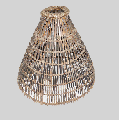
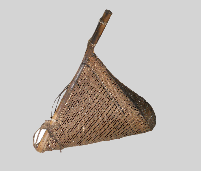
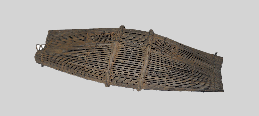
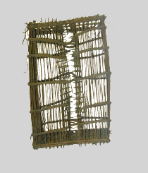
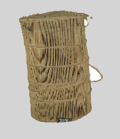

Shakshat Virtual Lab 
INDIAN INSTITUTE OF TECHNOLOGY GUWAHATI
Hunting, Fishing, Gathering Tools
Introduction
Early societies did not produce their own food but instead survived by hunting and gathering, or foraging. A hunter-gatherer or foraging, society is a society whose subsistence is based on the hunting of animals and gathering of vegetation. The basic economic, social, and political unit of hunter-gatherer societies is the band.
Food production as a subsistence pattern developed relatively recently, about 12,000 to 10,000 years ago. Thus, for almost 99 percent of humanity's life span, humans lived as foragers. This lifestyle has been the most enduring and persistent adaptation humans have ever achieved. Therefore, band societies have been the basic type of sociocultural system for perhaps as long as one million years. Hence, the study of the foraging way of life has been of particular interest to anthropologists as a means of understanding Paleolithic lifestyles; consequently, anthropologists have studied numerous contemporary hunting-and-gathering societies. Early cultural anthropologists thought that these studies could help provide models for understanding Paleolithic societies.
Unlike some of their nineteenth-century predecessors, however, modern anthropologists do not assume that contemporary hunting-and-gathering societies are representative of this type of society at early stages of human evolution. Paleolithic hunting and-gathering societies existed in nearly all the major biomes of the world, whereas modern band societies of this type exist only in limited, marginal environments, those that are not suitable for intensive agriculture. Therefore, contemporary hunters and gatherers are modern peoples who have adapted to extreme environmental conditions.
Present surrounding societies have altered all of these hunter-gatherer societies. For example, hunter gatherers in southeast Asia and Africa have carried on continuous economic exchanges with nearby agricultural societies for centuries. More recently, industrial societies have dramatically affected these hunting-and-gathering societies. Many of the hunter- gatherer have been forced by modern nation states to relocate and adjust to areas not suitable to their traditional subsistence practices. For reasons such as these, studies of modern hunter-gatherer societies do not offer precise comparative data for evaluating Paleolithic societies.
You will notice that here we refer to hunter-gatherers in both the past and present tenses. As a result of contacts with other peoples, many traditional practices and institutions of band societies have been transformed. The past tense is used to describe these traditional phenomena. Those traditions that have managed to persist into the present are discussed in the present tense.
Modern Foraging Environments and Subsistence
During the last 10,000 years, foraging societies have grown fewer and fewer and are now restricted to marginal environments. Deserts, tropical rain forests, and arctic areas are considered marginal environments, because until recently too much labor and capital were needed to irrigate deserts, plant crops in the Arctic, or slash down tropical forests for agriculture. Consequently, those few foraging or
hunter-gatherer societies that adjusted to these marginal environments managed to exist in relative isolation from surrounding groups.
hunter-gatherer societies that adjusted to these marginal environments managed to exist in relative isolation from surrounding groups.
Deserts
Various cultural-ecological studies have been done with foragers surviving in desert environments. One long-term study focuses on the! Kung San or Ju/'hoansi of the Kalahari Desert in southwestern Africa. The San occupied southern Africa for thousands of years along with another, biologically related population known popularly as the Hottentots, or Khoi. Archaeologist John Yellen (1985) located prehistoric sites in the Kalahari that have been dated to well over 11,000 years ago. This evidence suggests that the !Kung San had been residing in this region before agriculture spread to the surrounding region.
Most historians and archaeologists agree that the processes of migration and culture contact with surrounding societies have affected the !Kung San, and the "modern" !Kung San do not represent a pure remnant of Paleolithic society. The frequency of interaction of the San accelerated with European expansion and settlements throughout southern Africa in the eighteenth century. Currently, the population of the ]u/'hoansi or San is estimated at around 100,000 people.
Richard Lee, who studied the ]u/'hoansi or San from the 1960s through the 1990s, gives a comprehensive picture of their food-gathering and dietary practices. At the time he studied them, between 60 and 80 percent of the San diet consisted of nuts, roots, fruit, melons, and berries, which were gathered by the women. Meat from hunting was less common, providing only 20 to 30 percent of the diet. To procure this diet, the San did not need to expend enormous amounts of time and energy. In fact, Lee estimated that San adults spent between two and three days each week finding food .Women often were able to gather enough in one or two days to feed their families for a week, leaving time for resting, visiting, embroidering, and entertaining visitors. Males spent much of their leisure time in ritual activities, including curing ceremonies (Lee, 1972b, 1979, 1993).
Many of the Australian Aborigines were hunter- gatherers living in deserts that made up one-third of the continent. One group, known as the Arunta, lived in the interior desert region. They subsisted on the various species of animals and plants found in their habitat. Women and children gathered seeds, roots, snails, insects, reptiles, burrowing rodents, and eggs of birds and reptiles. Arunta males
specialized in hunting larger game such as the kangaroo, the wallaby, the large, ostrichlike emu, and smaller birds and animals. Ethnographic studies indicate that Aborigines spent four to five hours per day per person in gathering food (Sahlins, 1972).
specialized in hunting larger game such as the kangaroo, the wallaby, the large, ostrichlike emu, and smaller birds and animals. Ethnographic studies indicate that Aborigines spent four to five hours per day per person in gathering food (Sahlins, 1972).
Tropical Rain Forests
Foragers have also adapted to the marginal environments of tropical rain forests. In the central African country of Congo, formerly Zaire, a group of foragers known as the Mbuti Pygmies resides in the luxuriant Ituri rain forest. The first evidence of the Mbuti peoples comes from early Egyptian accounts of an expedition into the Ituri forest. From other archaeological data, it appears that the Mbuti have inhabited this region for at least 5,000 years. The late Colin Turnbull (1983), who did ethnographic research among the Mbuti in the 1960s, suggests that there was no dramatic change in Mbuti culture until about 450 years ago, after Europeans came to Africa.
The division of labor among the Mbuti resembles that of other hunting-and-gathering groups. Males hunt elephants, buffalo, wild pigs, and other game, and females gather vegetation. The entire group, however, is involved in the hunting endeavor. Mbuti males set up nets to capture the game, after which they stand guard with spears. Youths with bows and arrows stand farther back from the nets to shoot any game that escapes, while women and children form semicircles to drive the game into the nets. More independent hunting is done by older males and youths, who may wander off to shoot monkeys and birds.
Another hunting-gathering people, known as the Semang, inhabit the tropical forests of the Malaysian and Thai peninsula. They live in the foothills and lower slopes of dense rain forests that have exceptionally heavy precipitation. Although in the past the Semang may have hunted large game such as elephants and buffalo, they abandoned large-game hunting when they took up the blowgun instead of the bow and arrow (Keyes, 1995). Today, Semang males fish and hunt small game. However, Semang subsistence depends primarily on the gathering of wild fruits and vegetables, including yams, berries, nuts, and shoots collected by females.
Arctic Regions
Survival in arctic conditions has inspired considerable creative adjustments by groups of foragers popularly known as the Eskimo. Most Eskimo refer to themselves as the Inuit, as Inuit is the major language of these people. Early Inuit culture has been dated to at least 2500 B.C. Some Inuit live in north- western Alaska near the Bering Sea, and others live in the arctic regions of northern Canada, extending eastward all the way to Greenland. The northwestern Alaska Eskimo hunt sea mammals such as bow head, whales, seals, and walruses. Interior groups such as the Netsilik in central Canada, who were studied by cultural anthropologist Asen Balikci, hunt caribou, musk oxen, an occasional polar bear, seals, and birds. They also fish in nearby bays.
Because vegetation historically was scarce in arctic regions, it was a prized food. After killing the caribou, male hunters ate the animal's stomach so as to obtain the valued undigested vegetation. Although their diet consisted primarily of meat, the Inuit generally satisfied their basic nutritional requirements of carbohydrate, protein, and vitamins from eating berries, green roots, fish, and fish oil. They preferred cooked foods, but boiling food over fires fueled by blubber oil was slow and expensive; consequently, the Inuit ate most of their food raw.
Mobility and Subsistence
No matter what their particular environment, most hunters and gatherers share one characteristic: mobility. As food and other resources become scarce in one site, the groups have to move on to another. The Mbuti Pygmies, for example, reside in certain areas during the rainy season and other areas during other seasons, depending on the supply of game (Turnbull, 1983). The ju/'hoansi or San moved frequently in pursuit of resources. During the winter dry season, they congregated in large groupings around several watering holes, but during the rainy season the groups dispersed into small units. The San moved when subsistence required (Lee, 1969). Most Inuit groups also have to move during different seasons to pursue game and other resources. For example, the northwestern Alaska Eskimos move from the coastal areas into the interior regions during the summer seasons to hunt herds of caribou.
These nomadic behaviors are not arbitrary or spontaneous. Rather, they are carefully planned to minimize labor while providing vital resources. These patterns of mobility represent an admirable appreciation and intimate knowledge of the environment in which these foragers reside.
Optimal Foraging Theory
One of the ways in which anthropologists attempt to study the subsistence and foraging practices of hunter-gatherers is referred to as optimal foraging theory. Optimal foraging theory is used to try to predict what potential foods the foragers should exploit, if they are to make the most efficient use of time and energy. It also is used to predict what foods should be avoided because exploiting them would take up time and energy that could be used more efficiently for procuring other foods. The theory assesses the immediate costs and benefits of utlizing different subsistence strategies.
One of the most extensive uses of optimal foraging theory was that of Kristin Hawkes, Kimberly Hill, and james O'Connell, a team of anthropologists who studied the Ache hunter-gatherers of the tropical rain forests of Paraguay in South America (1982). These anthropologists found that optimal foraging theory tended to predict the types of foods procured by the Ache.
Foragers and Demographic Conditions
As we have seen, modern foragers live in marginal environments and travel from location to location. The requirement of mobility to procure resources has had a major effect on demographic conditions in these societies. Unlike food producers, hunters and gatherers must depend on the naturally occurring food resources in their territories. These food resources determine and limit excessive population growth. Generally, the population densities of foragers are extremely low as measured in relation to the limited carrying capacity of their environments.
Fissioning
One of the most important means of limiting population growth for foragers is fissioning. Fissioning is the movement of people from one group to another when the population begins to increase and food or other material resources become scarce. Resource scarcity creates population pressure in the form of hardships and problems that emerge as the biome's resources become overtaxed. In such cases, the typical response is for a portion of the population to migrate to other geographic regions. Fissioning was most likely the primary means of population control for Paleolithic foragers and to soine extent explains the worldwide expansion of the human species.
Fissioning is practiced by modern foragers to a limited extent. Its success depends on the presence of unoccupied land into which the excess population can expand. In situations where an increasing population is surrounded by other populations and fissioning is not possible, conflict between groups becomes likely, although sometimes fusion, or groups combining with one another, occurs
(Hammel & Howell, 1987)
Technology in Foraging Societies
Until recently. Anthropologists believed that manv modern hunter-gatherers had limited technologies, Nineteenth-century anthropologists thought that these limited technologies reflected a simplicity of mind and lack of skill. Modern anthropologists, in contrast, regard these technologies as highly functional in particular ecological conditions. More important, technology does not refer just to tools or artifacts; it also includes the cultural knowledge that has to be maintained by the society. All foraging peoples have an extensive knowledge of their environmental conditions and of the appropriate means of solving technological problems in these environments.
Economics in Foraging Societies
Despite the vast differences in physical environment, subsistence, and technology, most foraging societies have similar economic systems. The major form of economic system identified with these societies is called the reciprocal economic system (Sahlins, 1972). A reciprocal economic system is based on exchanges among family groups as a means of distributing goods and services throughout the society. The basic principle underlying this system is reciprocity, the widespread sharing of goods and services in a society. One reason for this system of reciprocal exchange is that the consumption of food and other resources is usually immediate, because there is very little storage capacity for any surplus. Thus, it makes sense to share what cannot be used anyway.
The Original Affluuent Society?
Until the 1960s, the traditional picture of foraging societies was that of people with limited technologies who were at the mercy of a harsh environment. It seemed that in these dire environmental circumstances, people had to work constantly to survive. In the 1960s, however, anthropologists began to draw on ethnographic studies to produce a much different image of hunter-gatherer societies. Modern cultural anthropologists gathered basic data on the types of production systems that hunter-gatherers use, the amount of time they spend in production and subsistence, the role of mobility in their adaptation, and how long they live.
The ethnographic data reported in Lee and DeVore's work indicate that contemporary foraging societies usually have an adequate and reliable food base. Lee 0972a, b, 1979, 1993), for example, has argued that the !Kung San or ]u/'hoansi diet was nutritionally adequate. The data also indicate that these foragers expended minimal labor to provide for their basic physical needs. Finally, the life expectancy in these societies turns out to be much greater than was once thought. These findings have led some anthropologists to refer to foragers as "original affluent societies" or "leisured societies" (Sahlins, 1972). Sahlins, for example, argued that the worldview of foragers differs radically from that of capitalist societies. He suggested that the sharing oriented economy of people such as the ju/'hoansi or !Kung San demonstrates that the forager's needs are few and are easily satisfied by a relatively meager amount of labor time. In Sahlins's view, foragers do not value the accumulation of material goods in the same way that people in modern capitalist societies do.
It is obvious that for populations that have to maintain a nomadic lifestyle, the accumulation of resources would be unproductive. Material possessions would be burdensome when trekking across the ice of the Arctic or through the dense rain forests. Without a way to store large quantities of food, it would be irrational to accumulate food resources only to have them spoil.
Further evidence of the affluence of foragers is drawn from the demographic conditions for these groups. For example, Lee argued that the composition of the ju/'hoansi or San population demonstrates that these people were not on the edge of starvation. Ten percent of the individuals surveyed by Lee were over 60 years of age, "a proportion that compares favorably to the percentage of elderly in industrialized populations" (Lee, 1968:36). The blind, senile, or disabled continued to be supported by the ju/'hoansi. The system of reciprocal exchanges thus ensures the survival of these individuals.
Social Organization in Foraging Societies
The fundamental social organization in foraging societies is-based on family, marriage, kinship, gender, and age. The two basic elements of social organization for foraging populations are the nuclear family and the band. The nuclear family is the small family unit associated with procreation: parents and offspring. The nuclear family appears to be most adaptive for hunting-gathering societies because of the flexibility needed for the location and easy distribution and exchange of food resources, and the other exigencies of hunting (Fox, 1967; Pasternak, 1976).
The most common type of band is made up of a related cluster of nuclear families ranging in size from twenty to one hundred individuals. At times, in societies such as the desert-dwelling Shoshone Indians, the bands may break up into nuclear families to locate food and other resources. Under other circumstances, several families may cooperate in hunting and other foraging activities. In some instances, bands may contain up to four or five (sometimes more) extended families, in which married children and their offspring reside with their parents. These multifamily bands provide the webs of kinship for foraging societies, enabling them to cooperate in subsistence and economic exchanges.
The specific number of people in a band depends on the carrying capacity of the natural environment. Most foraging groups had a range of twenty to one hundred people. Foragers in the desert, the Arctic, and the tropical rain forest all lived in small multifamily bands residing in separate territories. Typically, band organization is extremely flexible, with members leaving and joining bands as circumstances demand. Personal conflicts and shortages of resources may encourage people to move into or out of bands. In some cases, when food or water resources are scarce, whole bands may move into the territories of other bands.
Marriage and Kinship
Although a number of foraging groups practice polygyny, the most common type of marriage found in foraging societies is monogamy. Marriages are an important means of cementing social relationships. In some cases, betrothals are arranged while the future spouses are still young children. Typically, the girl is much younger than the male. For example, ]u/'hoansi or San girls are often married between the ages of 12 and 14, whereas males may be 18 to 25 years old or older.
Marriage Rules Marital arrangements in foraging societies are intended to enhance economic, social, and political interdependence among bands and to foster appropriate band alliances. To do this, rules are established to determine who may marry whom. Many of these rules concern marriages among cousins. A common marriage rule found in foraging societies is referred to as cross-cousin marriage. A cross cousin is the offspring of one's father's sister or one's mother's brother. In effect, a cross-cousin marriage means that a male marries a female who is his father's sister's daughter or his mother's brother's daughter.
Gender
Gender as an aspect of social structure in foraging societies is an extremely important area of ethnographic research. Cultural anthropologists have been examining the interrelationships among gender, subsistence, economic, and political patterns.
Political Organization in Foraging Societies
Just as the band is the fundamental element of social organization in most hunting-and-gathering societies, it is also the basic political unit. AB we saw in the discussion of social organization, bands are tied together through kinship and marriage, creating reciprocal economic and social relationships throughout the community. Each band, however, is politically independent of the others and has its own internal leadership. Most of the leaders in the bands are males, but females also take on some important leadership roles. Leaders are chosen because of their skills in hunting, food collecting, communication, decision making, or other personal abilities.
Political leaders generally do not control the group's economic resources or exercise political power as they do in other societies, and there is little, if any, social stratification between political leaders and others in the band. In other words, band societies are highly egalitarian, with no fundamental differences between those with and those without wealth or political power. Thus, leaders of bands must lead by persuasion and personal influence rather than by coercion or withholding resources. Leaders do not maintain a military or police force and thus have no definitive authority.
In recent extensive cross-cultural studies of the political processes of hunting-gathering societies, Christopher Boehm 0993, 1999) developed an imaginative hypothesis to explain the lack of political power and domination in these egalitarian societies. Boehm suggested that there is a pattern of reverse dominance in these societies, which keeps anyone from becoming coercive or politically dominating the group in any manner. Reverse dominance ensures that the whole group will have control over anybody who tries to assert political power or authority over them. Reverse dominance i practiced through criticism and ridicule, disobedience, strong disapproval, execution of offenders or extremely aggressive males, deposing leaders, or outright desertion (an entire group leaving a particularly dominant leader). Boehm finds that reverse dominance and related political processes are widespread in band societies, reinforcing patterns of egalitarianism. In a related hypothesis, Peter Gardner suggests that foraging societies tend to have strong cultural values that emphasize individual autonomy. Like Boehm, Gardner suggests that hunter-gatherers dislike being dominated and disdain conforming to norms that restrict their individual freedom. From reviewing many cases of band societies, Gardner indicates that the cultural values promoting individual autonomy enable these people to sustain their egalitarian way of life while promoting flexibility in their behavior, a distinguishing feature of foraging societies.
Religion in Foraging Societies
The religions associated with modern foragers are based on oral traditions referred to by Mircea Eliade (1959) as "cosmic religions." Cosmic religions are intimately associated with nature. The natural cycle of seasons; inorganic matter such as rocks, water, and mountains; and other features of the natural environment are invested with sacred significance.' Spirit and matter are inseparable. In addition, cosmic religions are not identified with any particular historical events or individuals, as are the "literate" religious traditions of Judaism, Islam, Christianity, Buddhism, and Hinduism.
The sacredness of the natural environment is sometimes expressed in a form of animism, the belief that spirits reside within all inorganic and organic substances. Yet, as applied to the metaphysical conceptions in the ]u/'hoansi or San, the Australian Aborigine, or Mbuti cultural systems, the label animism appears too simplistic. Concepts of a god or gods are found in combination with animistic beliefs.
The Dreamtime
An illuminating example of a cosmic religion among foragers is the Australian Aborigine notion of dreamtime (Starmer, 1979). The dreamtime exists in the "other world," the world associated with the time of creation, where a person goes in dreams and visions and after death. It is believed that at the time of creation, the ancestors deposited souls of all living forms near watering holes, and eventually these souls or spirits were embedded in all matter, from rocks and water to trees and humans. The unification of all substance and spirit was a byproduct of the work of these ancestral beings. All of these spirits come to the world from the dreamtime; the birth of the universe is like a fall from the dreamtime.
Art, Music, and Religion
The an of foraging societies is intimately related to nature. Animals. plants, humans, and other components of the natural environment are the major subjects. This naturalistic art also has a religious significance, as nature and spirit are viewed as inseparable. Rock paintings with highly symbolic images of natural phenomena are found in most foraging societies. It is believed that this art is sacred and can be used to make contact with supernatural sources. Traditional Inuit art products include many items made from ivory, one of the few rigid materials available in the Arctic. Human and animal figurines, which were worn as amulets to enhance supernatural powers and practices, dominate Inuit artistic output. The Inuit also carve masks in ivory (or sometimes wood) for use by their shamans.
The music of foraging societies is generally divided into recreational (folk or popular) and religious music. The Mbuti, for example, have no instrumental music, but they have many songs and dances. In their vocal music they have a precise sense of harmony, giving each singer one note to produce at a given moment. This leads to a harmonic pattern that is passed around a circle of people. This technique is often used in Mbuti recreational music.
Hunter gatherers is the term used by anthropologists to describe a specific kind of lifestyle, of all human beings until the invention of agriculture about 8000 years ago. To state it simply, hunter-gatherers hunt game and collect plant foods (called foraging) rather than grow or tend crops. Hunter-gatherers who rely on marine resources are known as hunter-gatherer-fishers.
Tools of the Hunter-Gatherer
Hunter-gatherers are traditionally identified by their tools: bow and arrow, atlas, harpoon and projectile points. Even after agriculture became a major source of food, hunting and gathering of wild plants continued and it remained amajor source of food. People who tend to stands of natural plants are called horticulturalists while those who farm are agriculturalists.
There are a few hunter and gatherers communities in the world today, but they have also been affected and influenced by economy and settle way of life.
Hunter-Gatherers and Domestication
Hunter-gatherers domesticated dogs, and also maize, broomcorn millet and wheat. Research findings published in the March 11 edition of the journal Science by an international team of noted anthropologists, including several from Arizona State University, who study hunter-gatherer societies, are informing the issue by suggesting that human ancestral social structure may be the root of cumulative culture and cooperation and, ultimately, human uniqueness.
Humans lived as hunter-gatherers for 95 percent of their species' history, current foraging societies provide the best window for viewing human social evolution, according to the authors.
For hundreds of thousands of years, up until the time when agriculture was invented (a mere 10,000 years ago), we were all hunter-gatherers. Our human instincts, including all of the instinctive means by which we learn, came about in the context of that way of life.
Fishing Implements and traps of North Eastern India
There are various kinds of fishing contraptions prepared out of cane and bamboo in different parts of the North East. A brief description of some of the fishing implements and traps widely used in North Eastern state Assam like polo, Jakoi, Chepa, khokafisa, khoka, Khaloi, Dori, Paran, Jhuti, Hogra, etc. is given below:
|
Round Trap
|
It resembles the shape of a dome with short stem of about 6" diameter open at the top. The diameter at the bottom varies from 2 ft-3½ ft. and even upto 4 ft. and the height varies from 2 ft. to 3 ft. It is prepared out of small bamboo strips fastened with fine and flexible cane slips. Polo(Round trap) is used for fishing in shallow water. The man who uses it hold it by the side of the stem, presses its rim on the mud, then pulls it back and lifts above or up to the level of water and again presses it as before while moving on through water. Whenever any fish is caught, he puts his hand inside through the stem to catch hold of the fish; julki is a small polo prepared in the same fashion.
|

|
|
Hand net
|
The ‘jakoi’ is a species of wicker work shovel that is either dragged along the bottom or placed on the water bed to catch the small fishes which take refuge in it when the weed is trampled. It is prepared with bamboo slips, which are locally known as ‘dai’. ‘Jati’ bamboo is specially used for making this particular implement.
|

|
|
Single valve round trap
|
The Chepa is made of some prepared bamboo rods according to required size. These are woven in a roundish fashion with jute string or soft cane slips. A bamboo-made valve locally known as ‘par’ (Bengali) and ‘kal’ (Assamese) is fitted in the middle of the chepa to allow the fishes to enter inside with no scope for going out.
|

|
|
Simple trap
|
Assamese khoka are laid between the stones in the rapids to secure any fish that may escape the fishing party. .
|

|
|
Bagtrap
|
A fishing device made by bamboo thin stick and cane. Used for catching big fish.
|

|
|
Cage trap
|
Fishermen in the rural areas of the state manufacture dories of various types. A ‘dori’ is generally rectangular. It is prepared out of small bamboo strips woven with flexible cane slips. A trap is fitted with a ‘dori’ in such a way that a bamboo-made screen is prolonged inwards from either side of the oval mouth and the pointed splints of the two sides interlock together.
|
|
Basket trap
|
These are various cages or basket traps made of bamboo splits used for catching fishes. There are two kinds of ‘parans’, namely (i) ‘uba paran’ (vertical cage) and (ii) ‘pora paran’ (horizontal cage). These are provided with one or two valves or trap doors through which fishes can be easily trapped.
|
|
Basket
|
The ‘khaloi’ is also prepared with bamboo strips. The strips required for the weft are very long, while those for the warp are short. The ‘khaloi’ is woven in the shape of an earthen ‘kalasi’ or pitcher. This is used for temporary keeping of fishes during hand-net fishing.
|
Copyright IIT GUWAHATI | Developed At IIT Guwahati